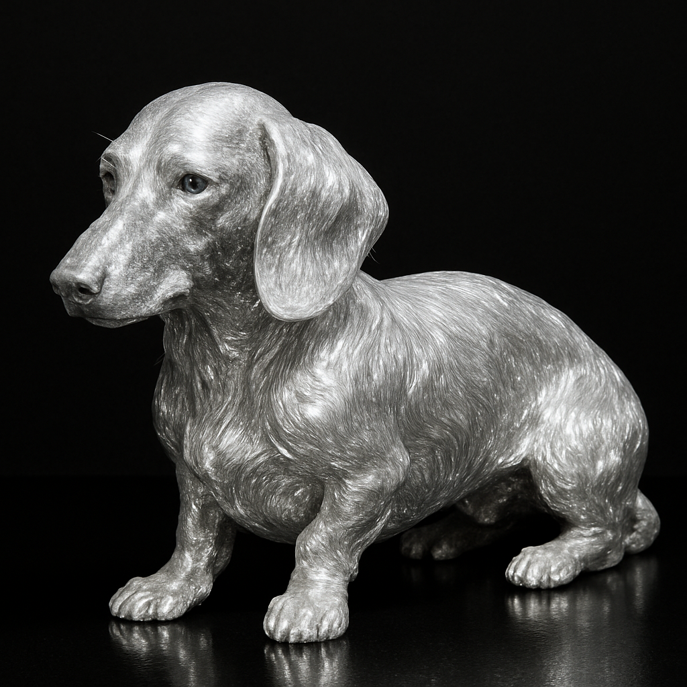
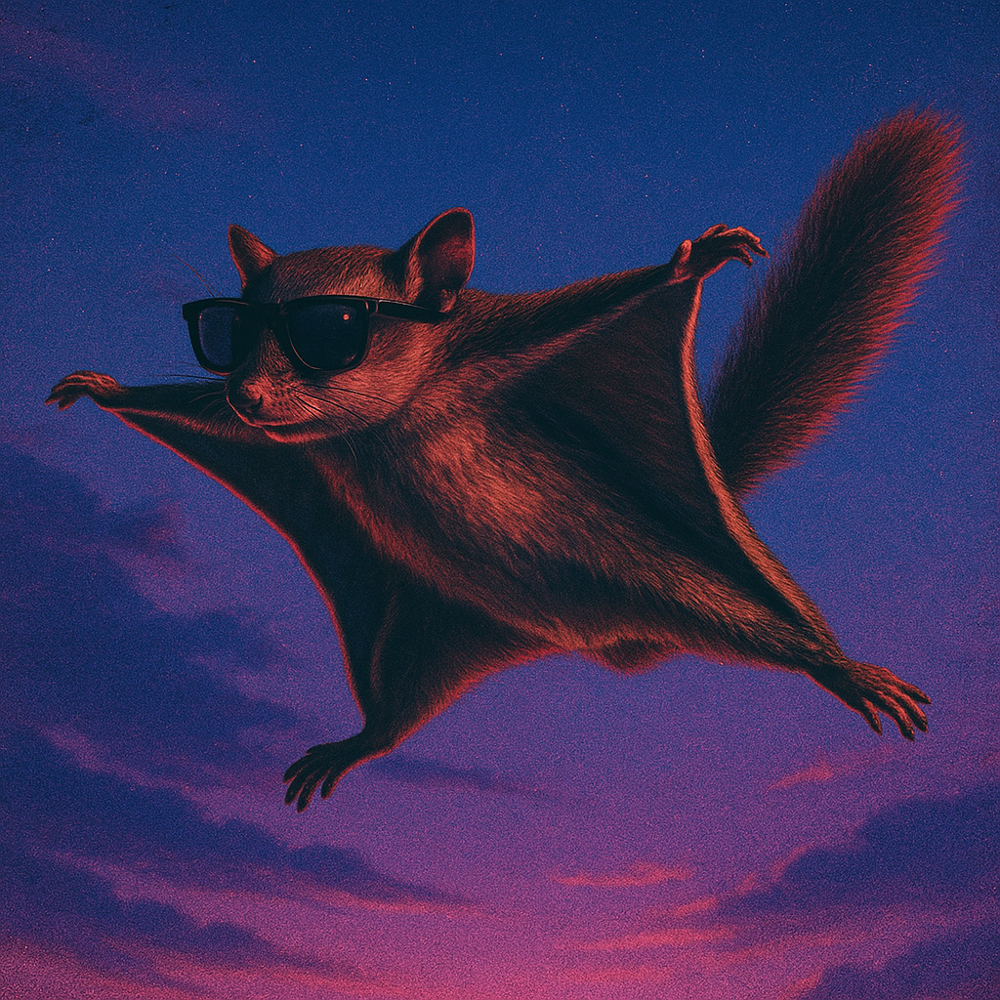
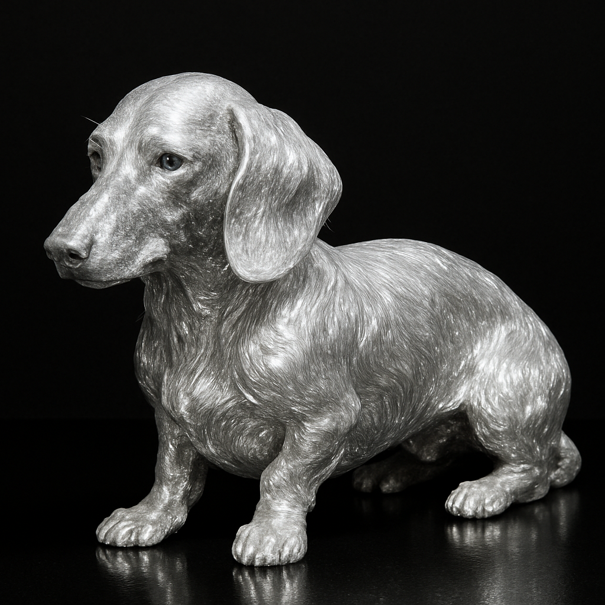
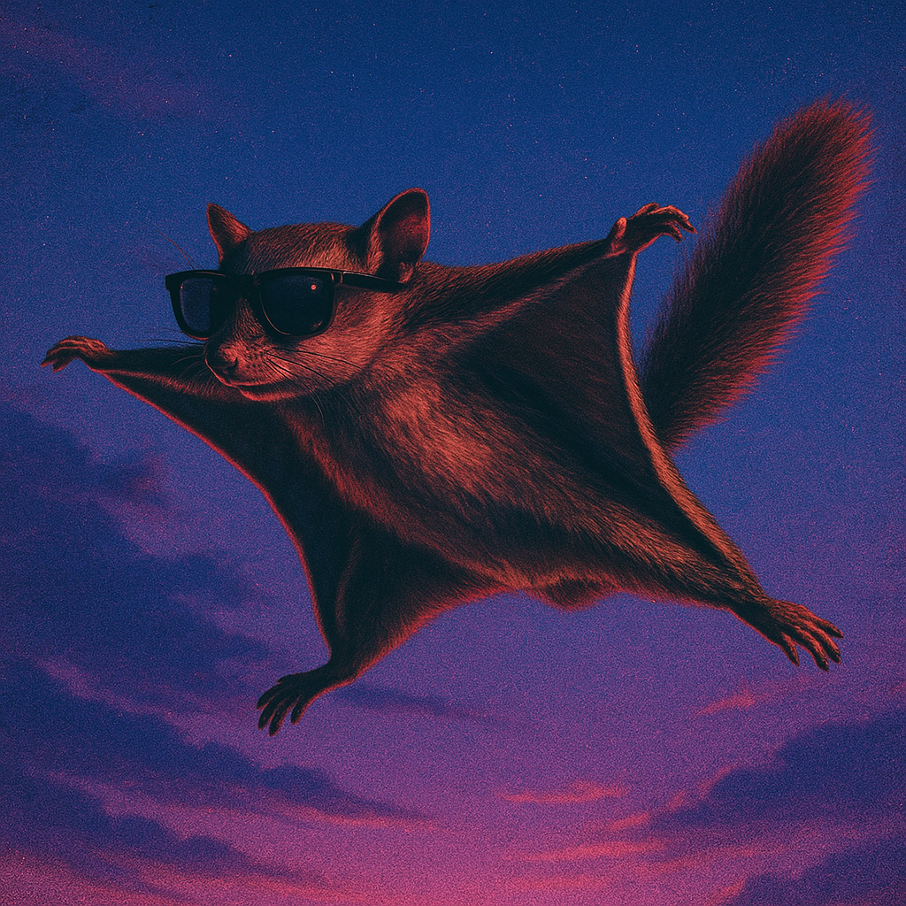

Album Artwork ▶︎
Where music becomes a visual language.


Project 1
Dreamy pop single cover inspired by cotton candy skies and soft nostalgia.
Overview
“Cotton Candy Heart”는 몽환적이고 포근한 감정을 가진 팝 싱글을 위한 앨범커버 디자인입니다.
음악이 전달하는 달콤함과 살짝 아린 감정을 파스텔 톤과 빈티지 질감으로 시각화했습니다.
Design Approach
• 코튼캔디 하트 모티브로 곡의 감정 중심을 아이코닉하게 표현
• 핑크–라일락–블루 파스텔 팔레트로 부드러운 분위기 연출
• 얇고 곡선이 풍부한 스크립트 타이포로 감정의 흐름을 강조
• 스크래치·마모 텍스처를 더해 ‘추억 속 레코드’ 같은 감성 부여
Original image
Design image

Project 2
Melancholic ballad cover blending deep-red roses with a vintage blue film mood.
Overview
“Bloom In Blue”는 짙은 감정선을 가진 발라드 싱글을 위한 커버 디자인으로,
사랑과 그리움의 무게가 동시에 피어오르는 순간을 시각적으로 담았습니다.
강렬한 레드 로즈와 대비되는 블루 톤 배경을 활용해,
곡이 가진 감정적 균형(아픔과 아름다움)을 표현했습니다.
Design Approach
• 장미꽃의 강렬함을 메인 심볼로 하여 사랑의 깊이와 감정의 무게를 강조
• 빈티지한 필름 텍스처 및 마모 효과로 감정의 시간성과 서정적인 분위기 강화
• 블루–레드 컬러 대비를 통해 ‘차갑지만 뜨거운’ 발라드 무드를 시각적으로 표현
• 굵고 볼드한 세리프 타이포를 사용해 클래식하면서도 강한 존재감 부여
Original image
Design image

Project 4
A moody winter-night cover where a lone car carries a glowing Christmas tree through the dark.
Overview
“Lost Christmas”는 홀로 겨울 밤길을 달리는 자동차 위 크리스마스트리를 통해,
잃어버린 온기와 늦게 찾아온 감정을 담아낸 싱글 커버 디자인입니다.
축제의 빛과 적막한 도로를 동시에 배치하여,
따뜻함과 외로움이 공존하는 홀리데이 무드를 시각적으로 표현했습니다.
Design Approach
• 인적 드문 겨울 도로 실루엣으로 고립감과 정적을 강조
• 공중에 떠 있는 듯한 자동차와 과장된 크리스마스트리로 현실과 기억 사이의 초현실적 장면 연출
• 전체는 딥 블루·차콜 계열의 차가운 팔레트, 트리 조명만 따뜻한 레드·옐로우로 대비시켜 감정의 포인트 형성
• 필름 그레인, 스크래치, 비네트 효과를 더해 오래된 레코드 커버 같은 ‘잃어버린 크리스마스’의 정서를 강화
Original image

Design image

Project 5

A melancholic cover where a single rainbow cuts through darkness to find the one who turned away.
Overview
“The Light That Didn’t Wait”는 깊은 우울과 내적 고독 속에서도
결국 스스로를 비추는 ‘빛’이 존재한다는 메시지를 담은 커버 디자인입니다.
짙은 블루 톤 배경과 고개 숙인 인물 실루엣, 그리고 그를 향해 곧게 뻗는 레인보우 라이트를 통해
절망과 희망의 극적인 대비를 시각적으로 구현했습니다.
Design Approach
• 전체를 어둡고 차가운 블루 팔레트로 설정해 감정적 무게 강조
• 인물의 뒷모습을 사용해 ‘단절’과 ‘내적 거리감’을 표현
• 레인보우 라이트를 구원·기억·치유의 메타포로 활용하여 곡의 메시지를 시각적 중심에 배치
• 빈티지 필름 스크래치와 표면 질감을 더해 감정의 시간성과 음원의 분위기를 강화
• 타이포그래피는 절제된 산세리프를 사용해 조용하고 깊은 메시지를 유지
Original image
Design image


Project 6
A cinematic film-style cover capturing two lovers choosing each other against the wind.
Overview
“We Chose Us”는 서로의 손을 잡고 바람 속을 달리는 두 사람의 순간을
필름 사진 같은 질감으로 담아낸 커버 디자인입니다.
사랑을 선택한다는 단순하지만 강력한 메시지를 중심에 두고,
현실과 로망 사이의 한 장면을 레트로 무드로 구현했습니다.
Design Approach
• 바람에 흩날리는 웨딩드레스의 움직임을 활용해 ‘자유와 질주’의 감정 표현
• 필름 카메라 특유의 색감과 그레인으로 진짜 스냅샷 같은 현실감을 강화
• 블랙 프레임과 그린 네온 타이포로 레트로 음악 패키지 느낌을 강조
• 사진의 흐림과 질감을 의도적으로 남겨 순간의 생생함과 감정적 진동 전달
• 커플의 실루엣을 중심에 배치해 ‘우리는 서로를 선택했다’는 주제를 직관적으로 시각화
Original image

Design image
Project 8
A retro-futuristic cover blending cosmic scale with surveillance-style targeting visuals.
Overview
“TARGET”는 우주의 광활함 속에서 하나의 존재를 ‘식별’하고 ‘추적’한다는 콘셉트로 제작된
하이브리드 커버 디자인입니다.
고전 히어로 일러스트와 모놀리식 달의 이미지를 조합하고,
네온 그린의 타겟 시스템 UI를 더해 레트로-퓨처리즘 음악의 분위기를 시각적으로 표현했습니다.
Design Approach
• 클래식 히어로 포즈에 저해상도 모노톤 질감을 적용해 80–90s 아카이브 이미지 같은 분위기 구현
• 메인 오브젝트를 감싸는 네온 그린 타겟 박스와 싱크 포인트로 ‘감시·추적’의 스토리텔링 강조
• 우주 배경·은하 디테일·달의 표면 텍스처로 곡의 장대한 스케일감을 형성
• 러프한 필름 스크래치와 낡은 레코드 질감으로 빈티지 사이파이 무드 강화
• 볼드 산세리프 타이포를 콘텐츠 하단에 배치해 강렬한 “TARGET” 타이틀 아이덴티티 확립
Original image
Design image


Project 9
A playful summer cover where a single tomato floats in a bright blue pool like a surreal pop icon.
Overview
“SWIMMING TOMATO”는 가볍고 중독성 있는 서머 트랙을 위해 기획된 커버 디자인으로,
물 위에 떠 있는 토마토라는 엉뚱한 이미지를 중심에 두어 곡의 유머러스하고 실험적인 무드를 담았습니다.
강렬한 레드와 청량한 블루의 대비를 통해, 단순하지만 한 번 보면 잊기 어려운 비주얼 아이덴티티를 형성했습니다.
Design Approach
• 수영장 타일과 물결 패턴을 활용해 계절감과 청량한 사운드 이미지를 직관적으로 전달
• 토마토를 중앙에 배치해 ‘의도적으로 텍스트 대신' 포인트 오브젝트로 사용, 위트 있는 곡 분위기 반영
• 볼드한 산세리프 타이포를 레드 컬러로 처리해 제목과 메인 오브젝트를 하나의 컬러 축으로 연결
• 그림자와 하이라이트를 세밀하게 조정해 토마토의 실물감을 강조하면서도 약간의 레트로 감성 유지
• 가장자리 스크래치와 마모 텍스처로 빈티지 레코드 커버 느낌을 더해 수집하고 싶은 피지컬 음반 이미지를 구현
Original image
Design image

About

음악은 소리만으로 완성되지 않습니다.
사람들이 가장 먼저 보게되는 것은 '앨범커버 이미지'입니다.
아티스트의 음악 속 감정과 서사를 분석해 [앨범 커버 이미지, 타이틀 디자인, 크레딧 문구]까지 하나의 ‘완성된 언어’처럼 표현하는 작업을 합니다.
- 앨범커버 이미지 제작
- 텍스트 디자인 작업
- 음악 스토리를 담은 소개·크레딧 문구 작성
'luckyble'은 작곡가 출신으로, 앨범 발매를 위한 A부터 Z까지의 과정을 다수 경험했으며, 음악이 가진 '분위기/ 장면/ 메시지'와 '아티스트의 의도'를 누구보다 깊이 이해할 수 있습니다.
현재는 홈페이지 제작(UX/UI)과 콘텐츠 디자인까지 함께 아우르는 Contents Developer로 활동하며, 다양한 작품의 세계관을 시각적으로 정교하게 구축하는 일을 하고 있습니다.
이 경험을 담아 당신이 창조한 멋진 음악에, 가장 아름다운 정체성을 담아 드릴게요.
Let your music become visible.
Music is never complete with sound alone.
The first encounter with an artist’s world begins with the image— and the text that frames it.
I analyze the emotion and narrative within the music and express them as a single, cohesive visual language across album cover imagery, title typography, and credit writing.
- Album cover image production
- Typography and text design
- Credit writing and narrative copy that reflects the music’s story
With a background as a composer and hands-on experience in the full A-to-Z process of album release, I deeply understand the atmosphere, scenes, messages, and artistic intentions behind music. This allows me to transform sound into refined and meaningful visual outcomes.
I now work as a Contents Developer, creating UX/UI-driven websites and visual content, building detailed and immersive worlds for various creative projects.
I would love to shape the story your music carries— with the most beautiful colors it deserves.
Album Artwork Feed
Check out various album artwork works.


 


